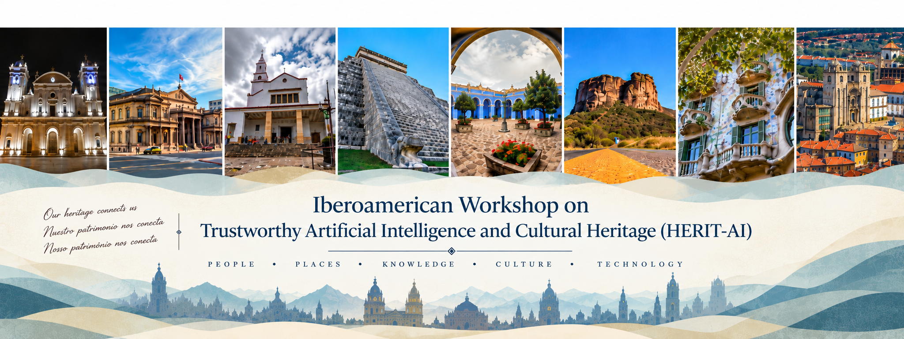

“Life is not what one lived, but what one remembers and how one remembers it in order to recount it.”
— Gabriel García Márquez, Living to Tell the Tale (2002).
ABOUT THE WORKSHOP
Cultural heritage embodies the history, traditions, identity, and collective memories of communities. Through its tangible and intangible manifestations, it preserves the cultural legacy of societies while fostering the transmission of knowledge, values, and practices across generations. As such, it plays a fundamental role in strengthening cultural identity, supporting education, and promoting social and historical awareness. Ultimately, cultural heritage is about preserving human memory, ensuring that the stories, knowledge, and values that define societies remain accessible to present and future generations.
Recent advances in Artificial Intelligence (AI) are creating new opportunities for documenting, preserving, analyzing, interpreting, managing, and disseminating cultural heritage. However, the use of AI in Cultural Heritage also raises significant risks and challenges. AI systems may reflect and reinforce biases, cultural stereotypes, or imbalances present in the data used to train them. In light of these challenges, HERIT-AI aims to bring together AI researchers and professionals from museums, archives, libraries, archaeology, conservation, digital humanities, and other Cultural Heritage institutions to foster interdisciplinary collaboration and knowledge exchange. Beyond original research papers, the workshop will provide a forum for discussing real-world experiences, case studies, pilot projects, and ongoing initiatives involving the adoption of AI in Cultural Heritage.
The vision of HERIT-AI is to build an Ibero-American community where Artificial Intelligence and Cultural Heritage evolve together. By encouraging dialogue, co-creation, and interdisciplinary collaboration, the workshop seeks not only to advance AI applications for cultural heritage, but also to inspire the development of a more human-centered, trustworthy, and socially meaningful Artificial Intelligence through one of humanity’s most valuable domains.
CALL FOR PAPERS
Types of Contributions
- Full Research Papers (up to 15 pages, including references). Original research contributions presenting novel methods, approaches, systems, or empirical results at the intersection of Trustworthy AI and Cultural Heritage.
- Short Research Papers (up to 10 pages, including references). Contributions presenting a clearly defined research problem and an emerging or work-in-progress scientific contribution, including preliminary methods, results, or findings.
- Blue-sky Ideas (up to 10 pages, including references). Innovative ideas, emerging research directions, conceptual approaches, and visions for the future of Trustworthy AI and Cultural Heritage.
- Extended Abstracts (up to 4 pages, including references). Early-stage ideas, preliminary projects, prototypes, datasets, demonstrations, case studies, or emerging initiatives. Accepted contributions will be presented as physical posters.
Topics of interest
- Intelligent digitization, documentation, and long-term preservation of cultural heritage assets.
- Computer vision techniques for artwork analysis, object recognition, image retrieval, damage assessment, and virtual reconstruction.
- Natural language processing and large language models for historical documents, archives, multilingual collections, and cultural knowledge extraction.
- Knowledge representation, knowledge graphs, semantic technologies, and reasoning for modeling and integrating cultural heritage information.
- Explainable, trustworthy, and responsible AI for supporting decision-making in museums, archives, libraries, and heritage institutions.
- AI-assisted conservation, restoration, monitoring, and risk assessment of cultural heritage.
- Generative AI and digital storytelling for education, interpretation, and public engagement.
- AI-supported visitor experiences, personalization, accessibility, and inclusive cultural participation.
- Ethical, legal, organizational, and societal challenges associated with the adoption of AI in Cultural Heritage.
- Real-world deployments, case studies, interdisciplinary collaborations, and evaluation methodologies for AI systems in heritage contexts.
- Misinformation, disinformation, and inaccurate, biased, or misleading narratives in AI-generated and AI-assisted representations of cultural heritage.
Submission Guidelines
Papers must be written in English, Spanish, or Portuguese and prepared using the official Springer LNCS format. For papers written in Spanish or Portuguese, the abstract must also be provided in English. All contributions must be submitted electronically through EasyChair. The submission link will be made available on this website.
Proceedings
Accepted papers will be included in the workshop on-line proceedings.
At least one author of each accepted paper is expected to register to the workshop and attend the workshop to present the paper.
We aim at selecting extended and revised versions of accepted papers to appear in a special issue of an international journal provided
that a sufficient amount of high quality papers is collected. Such papers will go through a second formal selection process to meet the high quality standard of the journal.
IMPORTANT DATES
- Submission deadline: October 20, 2026
- Notification of acceptance: To be announced
- Workshop: November 17, 2026
KEYNOTE
Keynote speaker
To be announced.
ORGANIZING COMMITTEE
-
Juan Carlos Nieves
(Umeå University) -
Mariela Morveli Espinoza
(Umeå University) -
Ulises Cortés
(Universitat Politècnica de Catalunya)
PROGRAMME
Workshop programme
The programme will be published after the review process.
Join the HERIT-AI community
For questions and collaboration opportunities, please contact the workshop organisers.
Contact us →